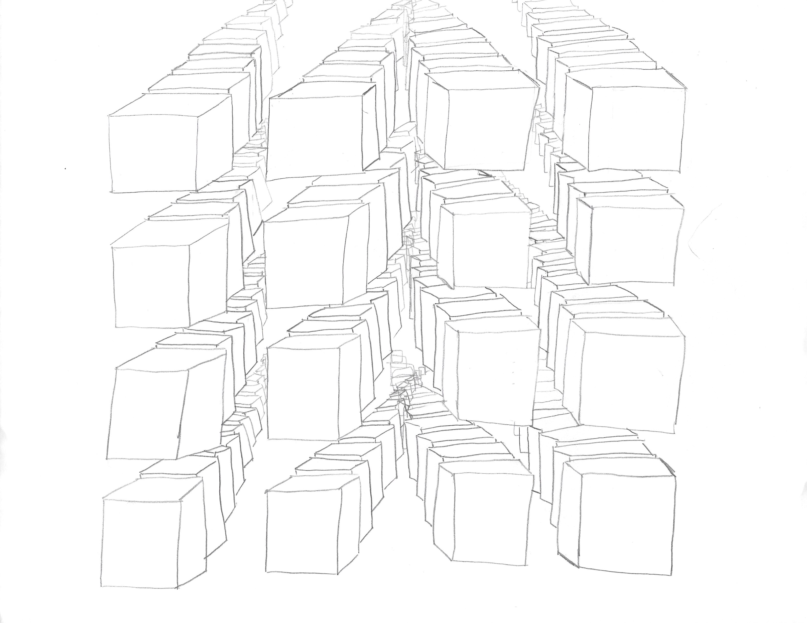

Photos are definately the future of sharing, as from experience only Facebook photos will get the most likes, Instagram is gaining popularity for advertising campaigns, and flickr is becoming a popular source for people to browse. Timelines are a fun way to view photos, but scrolling is boring. I would like to create a 3D photo experience, where you can fly through your photos on various social mediums. They would be aligned on cubes, a mixture of the end sequence of Interstellar. The rows will have the most 'liked' photos closer to the middle, getting less 'likes' as they span out to the left or right. The spoidals (z-axis depth-like colums) will be a reflection of time, and the further you go forward the farther back you go in time. This is a more interactive way to view your photos that is more tangible and fun, giving you more nostalgia than a simple scrolling timeline.
The theme would be something fun and different in the way you use your photos and view them. The subject is simply the user's photos, hopefully giving them a new way to interact with them.
The project will involve the use of API's, Facebook and Instagram if available, if not flickr will have to do. It will involve shaders and trying to construct geometric shapes and a platform that the user will be able to fly around in. Plenty of HTML, CSS, Javascript, and JQuery involved.
The site will have a section to input your username for facebook or instagram, and then a button that will have them proceed to the shader. Very simple, white background while all of these colorful cubes are floating in space. The input username section will feature the project logo across the top, and a curvy, fun box that looks playful and youthful.
The website threejs.org already has a lot of the material needed to make this interactive, with the geometric proportions as well. The pictures would come from API's, either Facebook, Instagram, or Flickr. Hopefully it is easy to place pictures on the sides of the geometric shapes, but I assume that just works with textures and shaders.